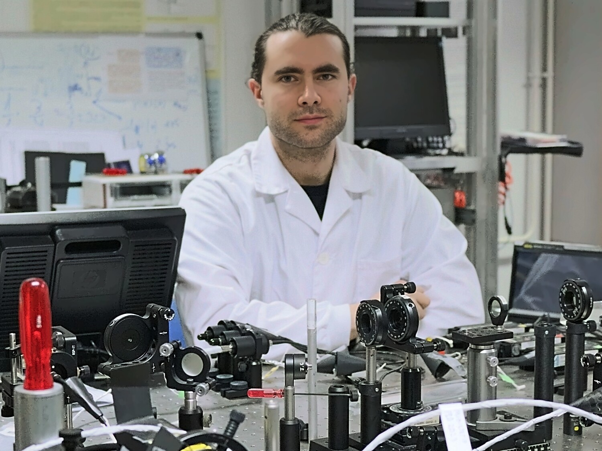

Javier Varela Carballo
Departamento de Física Aplicada
Universidade de Santiago de Compostela
- ORCID0000-0002-1709-8601
- EmailJaviVarela@proton.me

Abstract
Quantum key distribution (QKD) establishes keys whose security is based on physical principles, rather than on conventional methods grounded in mathematical problems that are merely difficult to solve. One of the main challenges in QKD is the development of photonic devices to generate and measure quantum states, which is where this thesis contributes, that is, development of Integrated Optical Devices (IODs) for QKD that operate in the 700–900 nm band and fabricated by ion exchange in glass, a highly reproducible process, providing an inexpensive platform highly compatible with optical fibers. Qubits are encoded in the path of the photon, and the IODs (state generators, passive projectors and receivers) are designed and built from synchronous directional couplers alone. This chromatic range is suitable for free space QKD and/or optical fibers in short distances.
A wide range of directional couplers has been fabricated by potassium and by silver ion-exchange in glass and characterized at 633, 780 and 843 nm, and their coupling is modeled as a function of the coupling length, the raised-sine S-bend section of channel guides, the gap between the rectilinear channel waveguides and the operating wavelength. Replicating the couplers at three waveguide widths reveals a gap at which the coupling is least sensitive to width errors. Polarimetry shows that the splitting ratio does not depend on the input polarization, and photon-counting measurements find it consistent with the classical characterization in the few-photon regime. Finally, these results are used to design the fabrication parameters of several integrated QKD devices built from such couplers, with their parameters taken both from the fabricated couplers and from the model; moreover, the layouts of these devices are shortened without altering any coupler by using suitable raised-sine S-bends and eliminating non functional rectilinear sections. In short, a powerful methodology for the design of ion-exchanged glass IOD manufacturing processes has been proposed and developed.
About the author
I fell in love with photonics during my first undergraduate lab sessions: few areas of physics let you see the wave nature of light with your own eyes, and photonics was also where quantum mechanics first stopped being just equations on a page for me.
Drawn to quantum optics, I approached Jesús Liñares, who kindly accepted my proposal for a bachelor's thesis on quantum cryptography. During my master's I went deeper into glass platforms and ion exchange, guided by Carlos Montero. Together, these projects became the foundation of the PhD thesis I am proud to present today. I owe special thanks to Xesús Prieto, whose help throughout the PhD was invaluable.
How to cite
Varela-Carballo, J. (2026). Contribution to the development of ion-exchanged glass integrated optical devices for quantum cryptography [Doctoral thesis in Physics, Universidade de Santiago de Compostela]. Zenodo. https://doi.org/10.5281/zenodo.23101764
BibTeX entry
@phdthesis{VarelaCarballo2026,
author = {Varela-Carballo, Javier},
title = {Contribution to the development of ion-exchanged glass integrated optical devices for quantum cryptography},
school = {Universidade de Santiago de Compostela},
year = {2026},
doi = {10.5281/zenodo.23101764},
url = {https://doi.org/10.5281/zenodo.23101764}
}